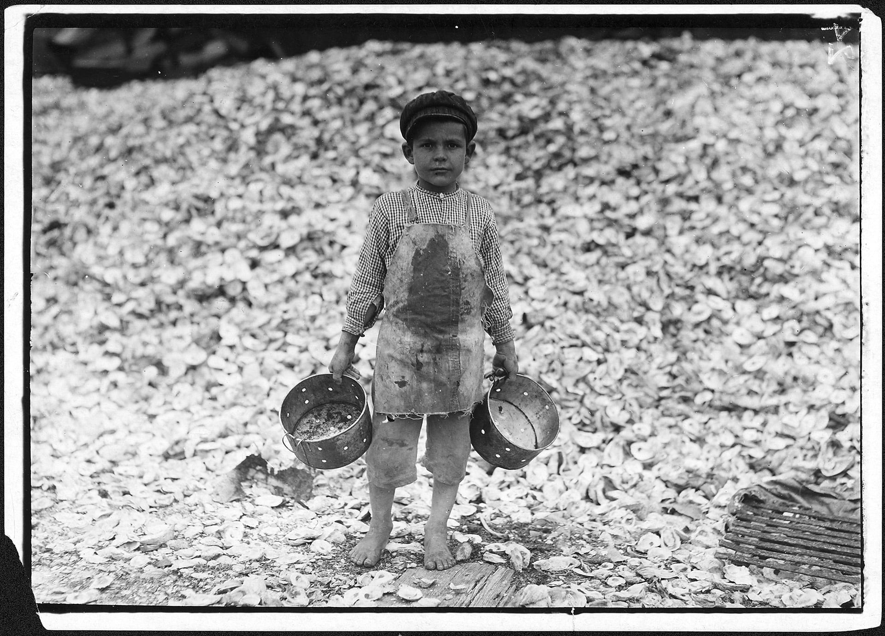

Not all work done by children should be classified as child labour that is to be targeted for elimination. Children’s or adolescents’ participation in work that does not affect their health and personal development or interfere with their schooling, is generally regarded as being something positive. This includes activities such as helping their parents around the home, assisting in a family business or earning pocket money outside school hours and during school holidays. These kinds of activities contribute to children’s development and to the welfare of their families; they provide them with skills and experience, and help to prepare them to be productive members of society during their adult life.
The term “child labour” is often defined as work that deprives children of their childhood, their potential and their dignity, and that is harmful to physical and mental development. It refers to work that is mentally, physically, socially or morally dangerous and harmful to children; and/or interferes with their schooling by: depriving them of the opportunity to attend school; obliging them to leave school prematurely; or requiring them to attempt to combine school attendance with excessively long and heavy work.
Whether or not particular forms of “work” can be called “child labour” depends on the child’s age, the type and hours of work performed, the conditions under which it is performed and the objectives pursued by individual countries. The answer varies from country to country, as well as among sectors within countries.